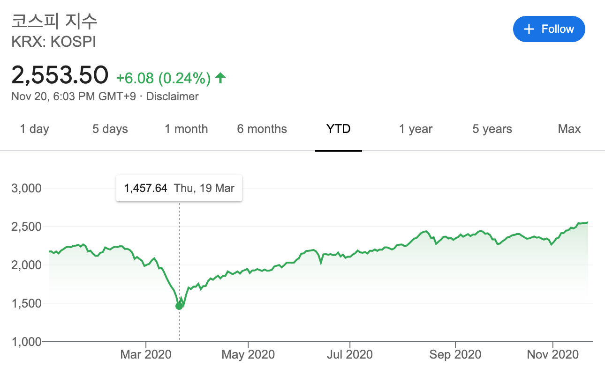
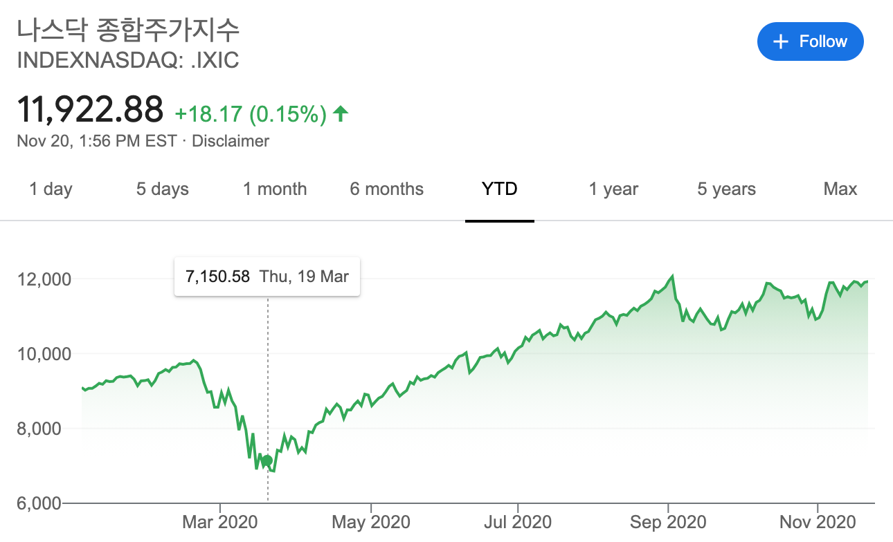

현재 실시간으로 벌어지고있는 상황이기는 하나, 많은 학자들은
COVID-19으로 인한 경제적 영향이 1930년대의 대공황, 2000년대의 대침체를 잇는,
세 번째 대규모의 세계 경제 위기가 될 것이라고 예측하고 있다.
국제통화기금(IMF)는 이를 대봉쇄(Great Lockdown)라고 명명했다.
경제가 마비되자 최소 -2%(한국), 최대 -15%(스페인)까지의 경제 축소를 겪고 있다.
기사1
기사2
기사3
기사4
현재까지의 여러 금융위기가 몇개의 문제에서 비롯된 것에 반하여
이번에는 생산, 판매, 소비 자체가 불가능해져 결국 내수가 멈춘,
즉 생산-판매-소비로 이루어진 실물경제 전체가 무너지며 일어난 경제위기라는 차이가 있다.
우리나라에서 경제가 위축되고 있다는 것을 사람들이 실감한 것은 자영업자들의 몰락이 상당부분을 차지한다..
기사5
"전국에서 지난 2분기 동안 하루에 1142곳 꼴로 자영업자 점포가 사라진 셈이다."
또한 금융시장의 하락 역시 엄청났다.
그중 대표적인 사건 몇개만 나열하겠다.
전 세계의 금융시장 1월 23일부터 29일까지 주식펀드 자금이 39억 달러 상당의 유출을 기록
미국 증시는 코로나 사태로 서브프라임 모기지 사태 이후 11년 만에 하락장
서브프라임 모기지 사태
2001년부터 본격적으로 시작된 CDO 시장의 확대와
그에 따른 서브프라임 주택담보대출의 확대,
미국 부동산 버블로부터 시작된
제 2차 세계대전 종전 이래 미국 최대, 최악의 금융위기.
2007년에 발생
대침체, 양극화, 현재까지 계속되고 있는 2010년대의 모든 경제위기와 관련된 일들이 비롯한 사건.
3월 16일 미국 증시는 개장하자마자 서킷브레이커 걸림.
이날 다우존스 산업평균지수 12.93%, S&P500 11.98%, 나스닥지수 12.32% 폭락
블룸버그가 3월 19일 기준으로 86개국 증시 시총을 집계.
전달 대비 25조 6천100억달러가 감소.(한화 약 3경 1천900조원)
한국 GDP의 약 17배에 달하는 금액
영상

두 지수 모두 3월 19일 경 엄청난 주가 폭락이 발생하였다는 것을 보여준다.